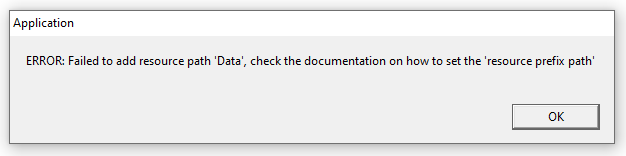

8Observer8
It is so simple to set up Urho3D-1.7.1 in Qt Creator IDE on Windows 10:
- Download and install Open Source Qt MinGW: Download Qt Open Source
- Download and unzip " Urho3D-1.7.1-MinGW-SHARED.zip", for example, to “E:/Libs” folder
- Run Qt Creator and create a new project: “File” > “New File or Project” > “Other Project” > “Empty qmake Project” > click the “Choose…” button > type a name of project, for example: Urho3D_QtCreator > click “Next” > “Next” > “Finish”
- Create a “main.cpp” file and copy this code to it:
#include <Urho3D/Engine/Application.h>
#include <iostream>
class MyApp : public Urho3D::Application
{
public:
MyApp(Urho3D::Context * context) : Urho3D::Application(context)
{
}
virtual void Setup()
{
std::cout << "Setup" << std::endl;
}
};
URHO3D_DEFINE_APPLICATION_MAIN(MyApp)
- Copy these settings to the .pro file:
Urho3D_QtCreator.pro
CONFIG += c++11
INCLUDEPATH += "E:\Libs\Urho3D-1.7.1-MinGW-SHARED\include\Urho3D\ThirdParty"
INCLUDEPATH += "E:\Libs\Urho3D-1.7.1-MinGW-SHARED\include"
LIBS += -L"E:\Libs\Urho3D-1.7.1-MinGW-SHARED\lib\Urho3D"
LIBS += -lUrho3D -lkernel32 -luser32 -lgdi32 -lwinspool -lshell32 -lole32 -loleaut32 -luuid -lcomdlg32 -lSetupapi -ladvapi32 -lwinmm -limm32 -lversion -lws2_32 -ldbghelp -lopengl32 -liphlpapi
SOURCES += \
main.cpp
- Run the project by pressing on the green triangle button in left bottom corner (or Ctrl + R). You will see this error:
 -
To solve this error you need to open the “debug” folder where your .exe is located and add two empty folders: “CoreData” and “Data”.To solve this error you need to copy two folders “CoreData” and “Data” from here “E:\Libs\Urho3D-1.7.1-MinGW-SHARED\share\Urho3D\Resources” to the “debug” folder where your .exe is located - Run the project again and it works.